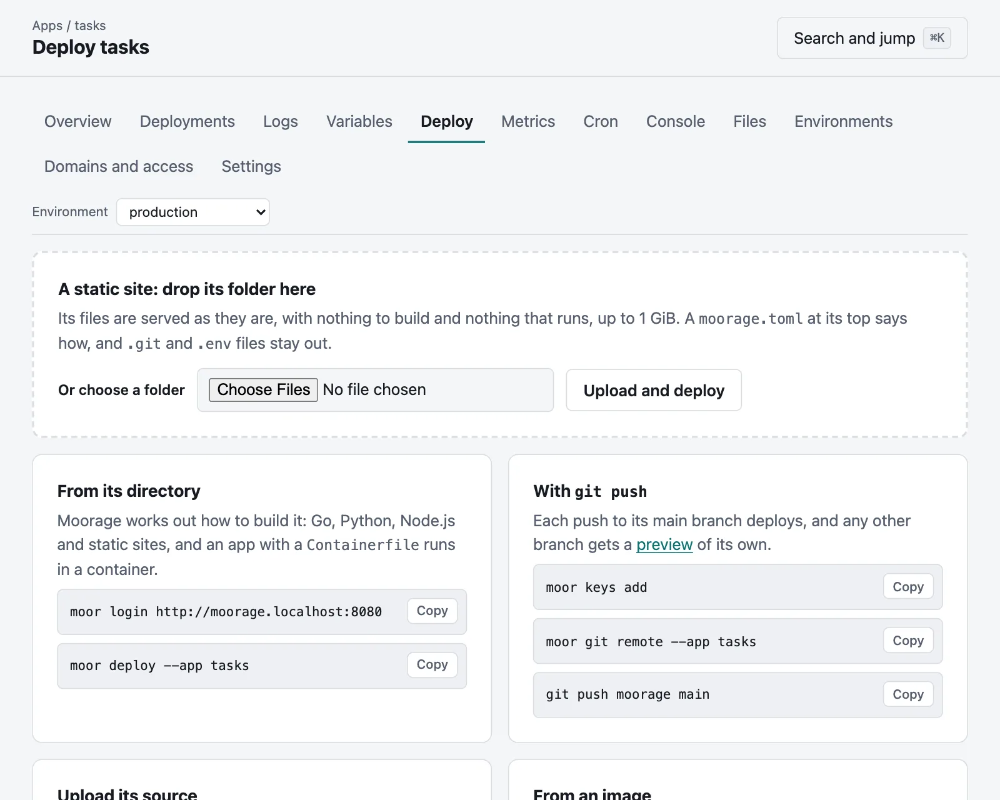
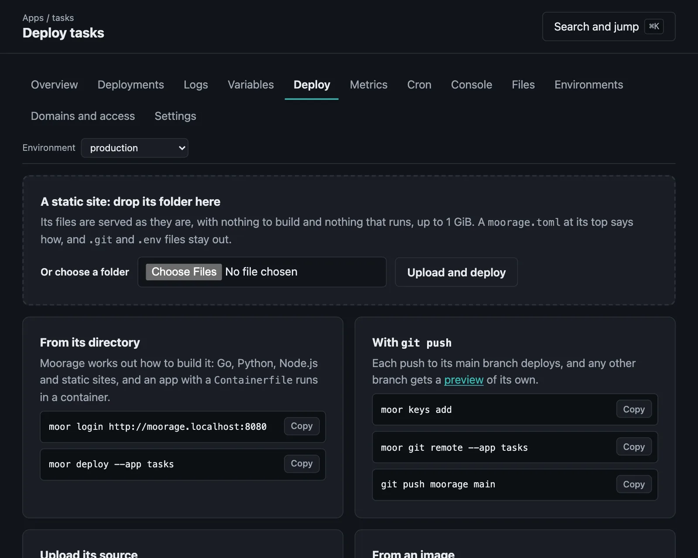

Static sites
Served by Moorage itself, with clean URLs, headers and redirects, and no process of its own.
On this page
A directory of files — documentation, a report, a single-page app — is served as it is, from Moorage itself: no process runs for it.
Upload a directory#
moor deploy --static ./public --app docsEvery deploy is a new release, swapped in at once; moor rollback brings the previous one back in a moment.
Or drop its folder in the console#
On an app's Deploy page, drop a folder on the box at the top, or choose one. It goes up and is live a moment later, with nothing to install, and a new app that way is made for it as well.


What is in one folder is taken to be the site, so that site/index.html is the front page. .git, .env, .env.* and the clutter that operating systems leave are left out, since whoever drops a folder does not see what is hidden in it, and the deployment's log says what was. A moorage.toml at its top says how to serve it, as below, and who may reach it, and is not served itself. A folder with a moorage.toml for an app that builds or runs is refused, as it would serve that app's source: upload that as source instead.
Or build it#
From source, Moorage detects a static site when the directory has an index.html (at the top or in dist, build, out, public, _site or site), and runs a build command first if you give one:
[app]
name = "docs"
runtime = "static"
toolchains = ["hugo@system"] # the server's own hugo
[build]
command = "hugo --minify"
[static]
dir = "public"moor deployA Node.js project without a start script is served the same way, from the output of its build (see Node.js).
Every release at its own address#
Each release of a static site that is still kept can be seen at an address of its own, as it was when it was deployed, to compare versions or to show someone an exact build:
https://docs--production--v12.apps.example.commoor releases lists them, and the view link in an app's Deployments goes to them.
This takes a certificate for those addresses. A server that gets one for each hostname from a CA does not ask for them, since anyone could then spend the CA's limit for your domain by visiting them, so that it does not offer them either. A wildcard covers them. The other ways of getting a certificate do too.
moor releases --app docsThey are behind the gate that the environment has now, so that closing an environment closes its old releases too, and they tell search engines to stay away. Moorage keeps an app's last five releases, or as many as keep_releases says. They need the same wildcard DNS record as the rest of your apps, so that with path routing there are none.
Serving rules#
[static] says how files are served:
[static]
dir = "dist"
spa = true # serve index.html for unknown paths
clean_urls = true # /about serves about.html
not_found = "404.html"
trailing_slash = "auto" # or "always", "never"
[[static.headers]]
for = "/assets/*"
values = { "Cache-Control" = "public, max-age=31536000, immutable" }
[[static.redirects]]
from = "/blog/:year/*"
to = "/posts/:year/:splat"
status = 301Files whose names carry a content hash (app.3f2a9c1b.js) are cached as immutable, HTML is revalidated, and pre-compressed .br and .gz files are served to browsers that accept them. listing = true lists directories, for file shares.
Files and directories whose names start with a dot are as good as absent, since .env and .git are far more often left behind than meant to be served. .well-known is the exception, and dotfiles = true serves the others.
A complete site: the Handbook example, with clean URLs, a 404 page, headers and redirects.